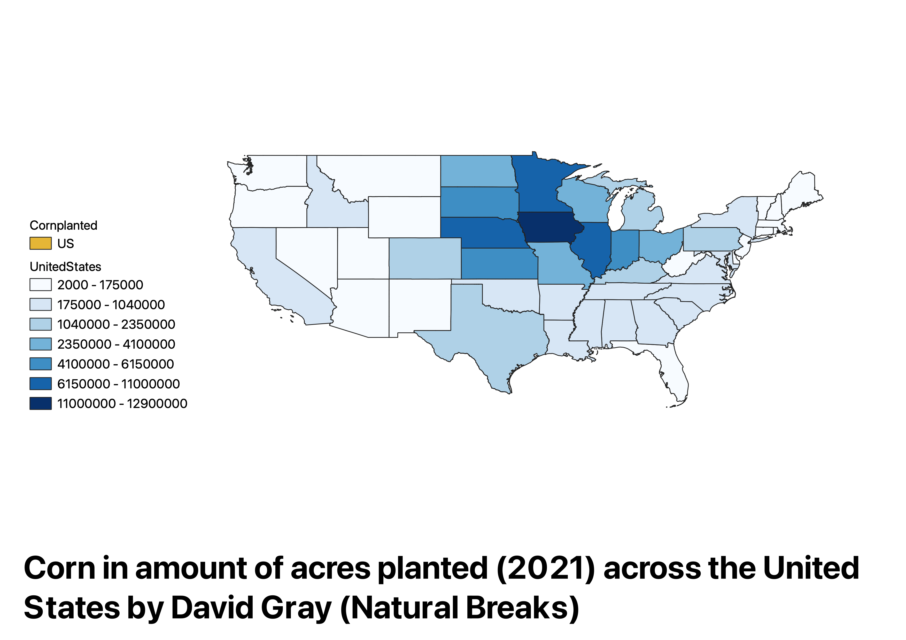

Homework 7: Make a choropleth or proportional symbol map
David Gray
This is a choropleth map of the United States that demonstrates the amount of acres of corn that were planted for each state in the 2021 year.
I decided to create a map on this topic because some form of corn is in almost everything we eat, and it is important
to know where our corn is produced. As you can see in the choropleth map, most of our corn is concentrated in the midwest in States
such as Iowa, Illinois, and Nebraksa. I decided on using the natural breaks mode of displaying the choropleth map because
it did the best job at accurately presenting the data. This is because other modes would typically only show the midwest having the darkest
colors and would not display how some of the other states are in comparison to each other. With the natural breaks mode,
we are able to see that a state such as texas has more acreage of corn planted than California. We may not have been able to tell that without natural breaks.

Data used for this project
CSV dataset
CSV source
Link to shapefile